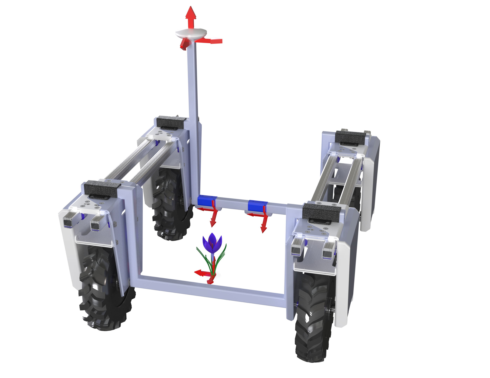
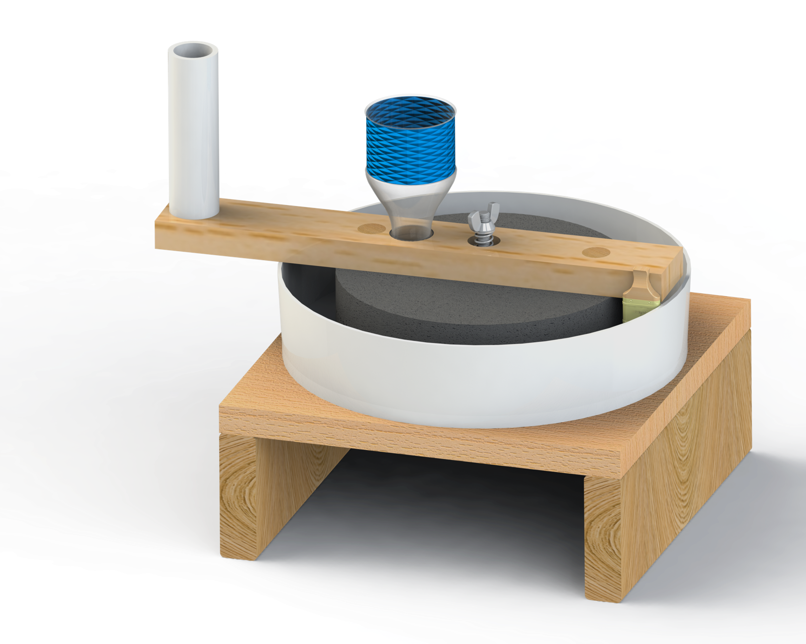
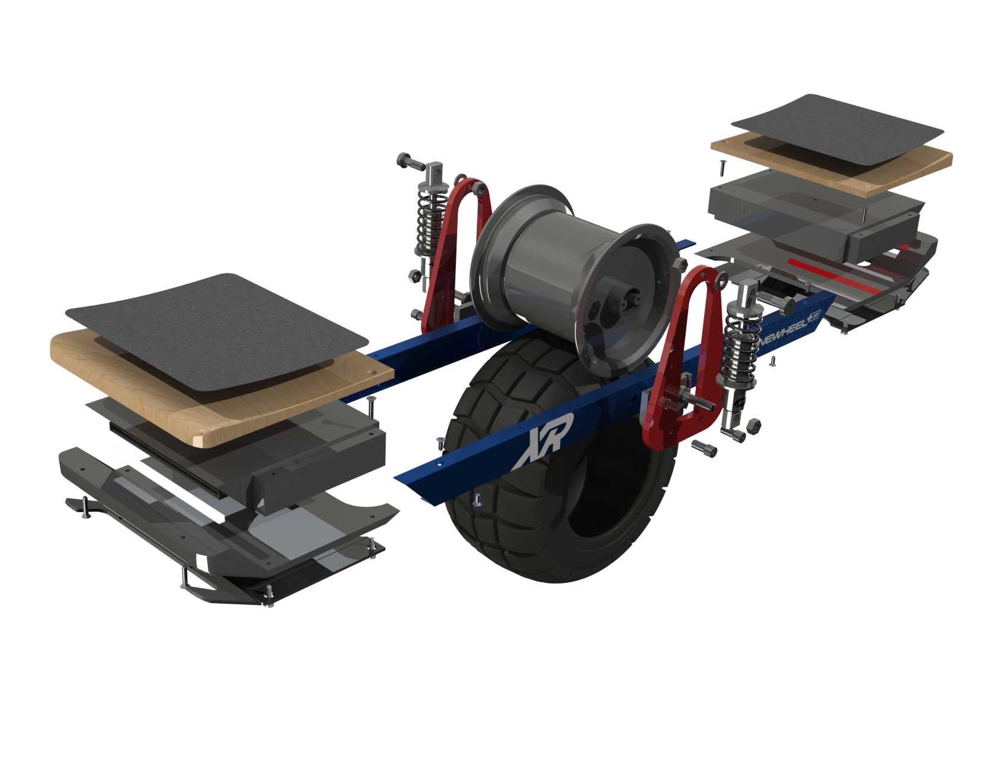
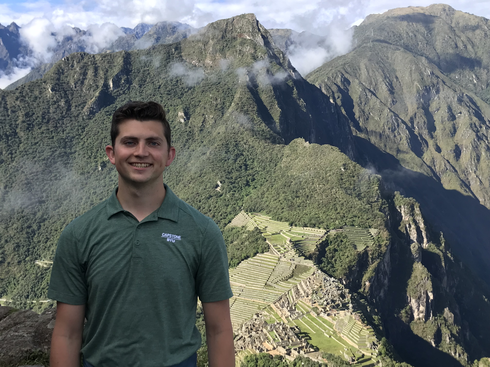

Mechanical & automation engineer. MS graduate. Work spans novel robotics research, humanitarian design deployed in the field, full cycle product development.

Field Robotics · PatentConducted field studies and developed automation solutions for agricultural harvesting operations.

Bolivia · Field DeploymentDesigned an affordable granite quinoa mill for rural Bolivian communities. Traveled to Bolivia to present designs, establish local sourcing, and build manufacturing pipelines so mills could be made and maintained in-country.

Product Design · CAD ModelingCollection of design projects.

I am currently completing an MS in Mechanical Engineering at BYU with a 4.00 GPA. My technical center is robotics and GNC, and I like projects that combine algorithm design, real hardware constraints, and measurable outcomes.
From rover autonomy to medical device prototyping, I prefer work where design and validation are tightly coupled. I enjoy turning messy field data into clear engineering decisions.